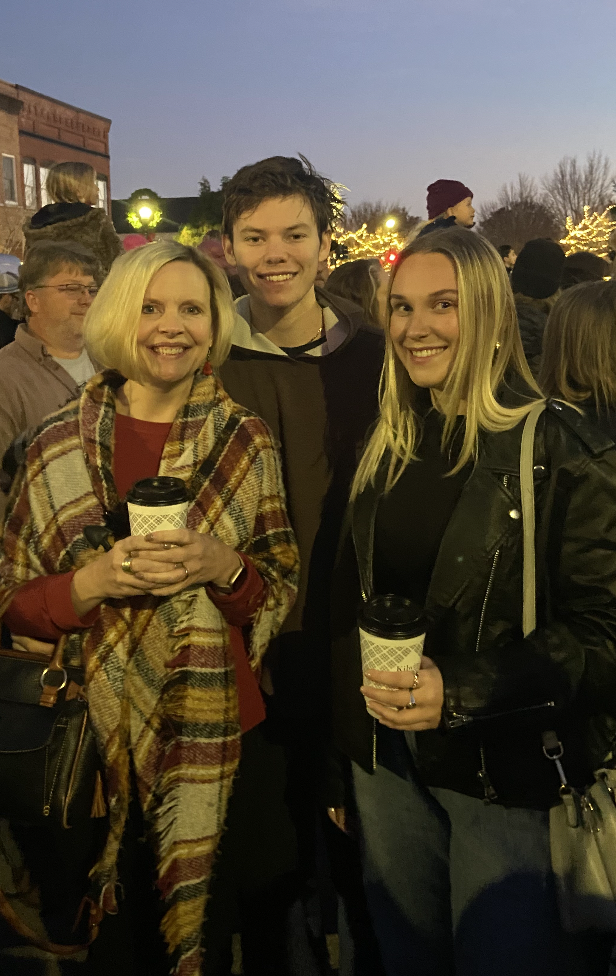

My mother, sister, and I at a Christmas parade
Personal background: I have lived in a lot of different places (military kid). The place I lived for the longest was Washington D.C., and my family is now in Hendersonville, NC. I love playing video games, playing basketball, and play-fighting with my cat.
Professional background: I was a tutor mainly in science and math. Then, I was a programming instructor teaching game development, some web development, and lots of programming fundamentals.
Academic background: I attended UC San Diego for two years, this is my first semester at UNCC. I majored in machine learning & neural computation at UCSD, and I am now majoring in computer science with a concentration in systems and networks.
Programming Software Background: I have around 5 years of programming experience. I have done a fair amount of game and web development, but now my main fixation is in training machine learning models.
Primary Computer Platform: macOS
Courses I'm in & Why:
ITIS 3135 - Web-Application Design and Development: I have been designing and developing websites for a while and want to keep building that valuable skill.
ITIS 3146 - Intro to Operating Systems and Networking: It all seems like magic right now, so I want to learn how operating systems are developed, maintained, and even exploited.
ITSC 2600 - CS Program, Identity, Career: To receive guidance and advice when it comes to building my career and personal brand. Of course, it is also required.
ITSC 3688 - Computers and Their Impact on Society: Computers have done lots of great things for society, I want to learn more about the not-so-great things.
POLS 1511 - Introduction to American Politics: For a theme credit.
Funny/Interesting Item about Yourself: I went to high school in Nairobi, Kenya.
I'd also like to Share: I will beat you in FIFA, or Mario Kart, you choose!